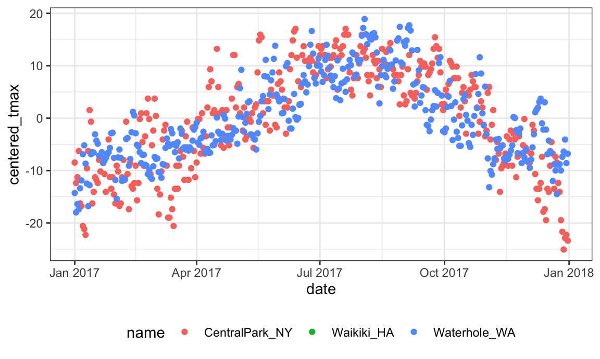

group_byData sets can frequently be partitioned into meaningful groups based on the variables they contain. Making this grouping explicit allows the computation of numeric summaries within groups, which in turn facilitates quantitative comparisons.
This is the second module in the Visualization and EDA topic; the relevant slack channel is here.
We’ll continue in the same Git repo / R project that we used for visualization, and use essentially the same weather_df dataset – the only exception is the addition of month variable, created using lubridate::floor_date().
weather_df =
rnoaa::meteo_pull_monitors(c("USW00094728", "USC00519397", "USS0023B17S"),
var = c("PRCP", "TMIN", "TMAX"),
date_min = "2017-01-01",
date_max = "2017-12-31") %>%
mutate(
name = recode(id, USW00094728 = "CentralPark_NY",
USC00519397 = "Waikiki_HA",
USS0023B17S = "Waterhole_WA"),
tmin = tmin / 10,
tmax = tmax / 10,
month = lubridate::floor_date(date, unit = "month")) %>%
select(name, id, date, month, everything())
## Registered S3 method overwritten by 'crul':
## method from
## as.character.form_file httr
## Registered S3 method overwritten by 'hoardr':
## method from
## print.cache_info httr
## file path: /Users/jeffgoldsmith/Library/Caches/rnoaa/ghcnd/USW00094728.dly
## file last updated: 2018-09-27 09:31:54
## file min/max dates: 1869-01-01 / 2018-09-30
## file path: /Users/jeffgoldsmith/Library/Caches/rnoaa/ghcnd/USC00519397.dly
## file last updated: 2018-09-27 09:32:03
## file min/max dates: 1965-01-01 / 2018-09-30
## file path: /Users/jeffgoldsmith/Library/Caches/rnoaa/ghcnd/USS0023B17S.dly
## file last updated: 2018-09-27 09:32:07
## file min/max dates: 1999-09-01 / 2018-09-30group_byDatasets are often comprised of groups defined by one or more (categorical) variable; group_by() makes these groupings explicit so that they can be included in subsequent operations. For example, we might group weather_df by name and month:
weather_df %>%
group_by(name, month)
## # A tibble: 1,095 x 7
## # Groups: name, month [36]
## name id date month prcp tmax tmin
## <chr> <chr> <date> <date> <dbl> <dbl> <dbl>
## 1 CentralPark_NY USW00094728 2017-01-01 2017-01-01 0 8.9 4.4
## 2 CentralPark_NY USW00094728 2017-01-02 2017-01-01 53 5 2.8
## 3 CentralPark_NY USW00094728 2017-01-03 2017-01-01 147 6.1 3.9
## 4 CentralPark_NY USW00094728 2017-01-04 2017-01-01 0 11.1 1.1
## 5 CentralPark_NY USW00094728 2017-01-05 2017-01-01 0 1.1 -2.7
## 6 CentralPark_NY USW00094728 2017-01-06 2017-01-01 13 0.6 -3.8
## # … with 1,089 more rowsSeveral important functions respect grouping structures. You will frequently use summarize to create one-number summaries within each group, or use mutate to define variables within groups. The rest of this example shows these functions in action.
Because these (and other) functions will use grouping information if it exists, it is sometimes necessary to remove groups using ungroup().
As an intro to summarize, let’s count the number of observations in each month in the complete weather_df dataset.
weather_df %>%
group_by(month) %>%
summarize(n = n())
## # A tibble: 12 x 2
## month n
## <date> <int>
## 1 2017-01-01 93
## 2 2017-02-01 84
## 3 2017-03-01 93
## 4 2017-04-01 90
## 5 2017-05-01 93
## 6 2017-06-01 90
## 7 2017-07-01 93
## 8 2017-08-01 93
## 9 2017-09-01 90
## 10 2017-10-01 93
## 11 2017-11-01 90
## 12 2017-12-01 93The result is a dataframe that includes the grouping variable and the desired summary.
In this case, you could use count() in place of group_by() and summarize() if you remember that this function exists. I’ll also make use of the name argument in count, which defaults to "n".
weather_df %>%
count(month, name = "n_days")
## # A tibble: 12 x 2
## month n_days
## <date> <int>
## 1 2017-01-01 93
## 2 2017-02-01 84
## 3 2017-03-01 93
## 4 2017-04-01 90
## 5 2017-05-01 93
## 6 2017-06-01 90
## 7 2017-07-01 93
## 8 2017-08-01 93
## 9 2017-09-01 90
## 10 2017-10-01 93
## 11 2017-11-01 90
## 12 2017-12-01 93count() is a useful tidyverse alternative to Base R’s table function. Both functions produce summaries of how often values appear, but table’s output is of class table and is hard to do any additional work with, while count produces a dataframe you can use or manipulate directly. For an example, run the code below and try to do something useful with the result…
weather_df %>%
pull(month) %>%
tableYou can use summarize() to compute multiple summaries within each group. As an example, we count the number of observations in each month and the number of distinct values of date in each month.
weather_df %>%
group_by(month) %>%
summarize(
n_obs = n(),
n_days = n_distinct(date))
## # A tibble: 12 x 3
## month n_obs n_days
## <date> <int> <int>
## 1 2017-01-01 93 31
## 2 2017-02-01 84 28
## 3 2017-03-01 93 31
## 4 2017-04-01 90 30
## 5 2017-05-01 93 31
## 6 2017-06-01 90 30
## 7 2017-07-01 93 31
## 8 2017-08-01 93 31
## 9 2017-09-01 90 30
## 10 2017-10-01 93 31
## 11 2017-11-01 90 30
## 12 2017-12-01 93 31You might find yourself, someday, wanting to tabulate the frequency of a binary outcome across levels of a binary predictor. In a contrived example, let’s say you want to look at the number of cold and not-cold days in Central Park and Waterhole. We can do this with some extra data manipulation steps and group_by + summarize:
weather_df %>%
mutate(
cold = case_when(
tmax < 5 ~ "cold",
tmax >= 5 ~ "not_cold",
TRUE ~ ""
)) %>%
filter(name != "Waikiki_HA") %>%
group_by(name, cold) %>%
summarize(count = n())
## # A tibble: 4 x 3
## # Groups: name [2]
## name cold count
## <chr> <chr> <int>
## 1 CentralPark_NY cold 44
## 2 CentralPark_NY not_cold 321
## 3 Waterhole_WA cold 172
## 4 Waterhole_WA not_cold 193This is a “tidy” table, and it’s also a data frame. You could re-organize into a more standard (non-tidy) 2x2 table using pivot_wider, or you could use janitor::tabyl:
weather_df %>%
mutate(cold = case_when(
tmax < 5 ~ "cold",
tmax >= 5 ~ "not_cold",
TRUE ~ ""
)) %>%
filter(name != "Waikiki_HA") %>%
janitor::tabyl(name, cold)
## name cold not_cold
## CentralPark_NY 44 321
## Waterhole_WA 172 193This isn’t tidy, but it is still a data frame – and that’s noticeably better than usual output from R’s built-in table function. janitor has a lot of little functions like this that turn out to be useful, so when you have some time you might read through all the things you can do. I don’t really love that this is called tabyl, but you can’t always get what you want in life.
(Since we’re on the subject, I think 2x2 tables are kind of silly. When are you ever going to actually analyze data in that format?? In grad school I thought I’d be computing odds ratios by hand everyday (\(OR = AD / BC\), right?!), but really I do that as often as I write in cursive – which is never. Just do a logistic regression adjusting for confounders – because there are always confounders. And is a 2x2 table really that much better than the “tidy” version? There are 4 numbers. )
Standard statistical summaries are regularly computed in summarize() using functions like mean(), median(), var(), sd(), mad(), IQR(), min(), and max(). To use these, you indicate the variable to which they apply and include any additional arguments as necessary.
weather_df %>%
group_by(month) %>%
summarize(
mean_tmax = mean(tmax),
mean_prec = mean(prcp, na.rm = TRUE),
median_tmax = median(tmax),
sd_tmax = sd(tmax))
## # A tibble: 12 x 5
## month mean_tmax mean_prec median_tmax sd_tmax
## <date> <dbl> <dbl> <dbl> <dbl>
## 1 2017-01-01 10.8 37.0 6.1 13.1
## 2 2017-02-01 12.2 57.9 8.3 12.1
## 3 2017-03-01 13.0 54.6 8.3 12.4
## 4 2017-04-01 17.3 32.9 18.3 11.2
## 5 2017-05-01 NA 28.4 NA NA
## 6 2017-06-01 23.5 18.7 27.2 8.73
## 7 2017-07-01 NA 12.7 NA NA
## 8 2017-08-01 26.3 10.2 27.2 5.87
## 9 2017-09-01 23.8 9.94 26.1 8.42
## 10 2017-10-01 20.1 41.5 22.2 9.75
## 11 2017-11-01 14.0 61.5 12.0 11.6
## 12 2017-12-01 11.0 40.2 8.9 11.9You can group by more than one variable.
weather_df %>%
group_by(name, month) %>%
summarize(
mean_tmax = mean(tmax),
median_tmax = median(tmax))
## # A tibble: 36 x 4
## # Groups: name [3]
## name month mean_tmax median_tmax
## <chr> <date> <dbl> <dbl>
## 1 CentralPark_NY 2017-01-01 5.98 6.1
## 2 CentralPark_NY 2017-02-01 9.28 8.3
## 3 CentralPark_NY 2017-03-01 8.22 8.3
## 4 CentralPark_NY 2017-04-01 18.3 18.3
## 5 CentralPark_NY 2017-05-01 20.1 19.4
## 6 CentralPark_NY 2017-06-01 26.3 27.2
## # … with 30 more rowsThe fact that summarize() produces a dataframe is important (and consistent with other functions in the tidyverse). You can incorporate grouping and summarizing within broader analysis pipelines. For example, we can take create a plot based on the monthly summary:
weather_df %>%
group_by(name, month) %>%
summarize(mean_tmax = mean(tmax)) %>%
ggplot(aes(x = month, y = mean_tmax, color = name)) +
geom_point() + geom_line() +
theme(legend.position = "bottom")
## Warning: Removed 2 rows containing missing values (geom_point).The results of group_by() and summarize() are generally tidy, but presenting reader-friendly results for this kind of exploratory analysis often benefits from some un-tidying. For example, the table below shows month-by-month average max temperatures in a more human-readable format.
weather_df %>%
group_by(name, month) %>%
summarize(mean_tmax = mean(tmax)) %>%
pivot_wider(
names_from = name,
values_from = mean_tmax) %>%
knitr::kable(digits = 1)| month | CentralPark_NY | Waikiki_HA | Waterhole_WA |
|---|---|---|---|
| 2017-01-01 | 6.0 | 27.8 | -1.4 |
| 2017-02-01 | 9.3 | 27.2 | 0.0 |
| 2017-03-01 | 8.2 | 29.1 | 1.7 |
| 2017-04-01 | 18.3 | 29.7 | 3.9 |
| 2017-05-01 | 20.1 | NA | 10.1 |
| 2017-06-01 | 26.3 | 31.3 | 12.9 |
| 2017-07-01 | 28.7 | NA | 16.3 |
| 2017-08-01 | 27.2 | 32.0 | 19.6 |
| 2017-09-01 | 25.4 | 31.7 | 14.2 |
| 2017-10-01 | 21.8 | 30.3 | 8.3 |
| 2017-11-01 | 12.3 | 28.4 | 1.4 |
| 2017-12-01 | 4.5 | 26.5 | 2.2 |
mutateSummarizing collapses groups into single data points. In contrast, using mutate() in conjuntion with group_by() will retain all original data points and add new variables computed within groups.
Suppose you want to compare the daily max temperature to the annual average max temperature for each station separately, and to plot the result. You could do so using:
weather_df %>%
group_by(name) %>%
mutate(centered_tmax = tmax - mean(tmax)) %>%
ggplot(aes(x = date, y = centered_tmax, color = name)) +
geom_point()
## Warning: Removed 365 rows containing missing values (geom_point).
The previous example used mean() to compute the mean within each group, which was then subtracted from the observed max tempurature. mean() takes n inputs and produces a single output.
Window functions, in contrast, take n inputs and return n outputs, and the outputs depend on all the inputs. There are several categories of window functions; you’re most likely to need ranking functions and offsets, which we illustrate below.
First, we can find the max temperature ranking within month.
weather_df %>%
group_by(name, month) %>%
mutate(temp_ranking = min_rank(tmax))
## # A tibble: 1,095 x 8
## # Groups: name, month [36]
## name id date month prcp tmax tmin temp_ranking
## <chr> <chr> <date> <date> <dbl> <dbl> <dbl> <int>
## 1 CentralPar… USW0009… 2017-01-01 2017-01-01 0 8.9 4.4 22
## 2 CentralPar… USW0009… 2017-01-02 2017-01-01 53 5 2.8 12
## 3 CentralPar… USW0009… 2017-01-03 2017-01-01 147 6.1 3.9 15
## 4 CentralPar… USW0009… 2017-01-04 2017-01-01 0 11.1 1.1 27
## 5 CentralPar… USW0009… 2017-01-05 2017-01-01 0 1.1 -2.7 5
## 6 CentralPar… USW0009… 2017-01-06 2017-01-01 13 0.6 -3.8 4
## # … with 1,089 more rowsThis sort of ranking is useful when filtering data based on rank. We could, for example, keep only the day with the lowest max temperature within each month:
weather_df %>%
group_by(name, month) %>%
filter(min_rank(tmax) < 2)
## # A tibble: 42 x 7
## # Groups: name, month [36]
## name id date month prcp tmax tmin
## <chr> <chr> <date> <date> <dbl> <dbl> <dbl>
## 1 CentralPark_NY USW00094728 2017-01-09 2017-01-01 0 -4.9 -9.9
## 2 CentralPark_NY USW00094728 2017-02-10 2017-02-01 0 0 -7.1
## 3 CentralPark_NY USW00094728 2017-03-15 2017-03-01 0 -3.2 -6.6
## 4 CentralPark_NY USW00094728 2017-04-01 2017-04-01 0 8.9 2.8
## 5 CentralPark_NY USW00094728 2017-05-13 2017-05-01 409 11.7 7.2
## 6 CentralPark_NY USW00094728 2017-06-06 2017-06-01 15 14.4 11.1
## # … with 36 more rowsWe could also keep the three days with the highest max temperature:
weather_df %>%
group_by(name, month) %>%
filter(min_rank(desc(tmax)) < 4)
## # A tibble: 149 x 7
## # Groups: name, month [36]
## name id date month prcp tmax tmin
## <chr> <chr> <date> <date> <dbl> <dbl> <dbl>
## 1 CentralPark_NY USW00094728 2017-01-12 2017-01-01 13 18.9 8.3
## 2 CentralPark_NY USW00094728 2017-01-13 2017-01-01 0 16.7 0
## 3 CentralPark_NY USW00094728 2017-01-26 2017-01-01 5 13.3 6.1
## 4 CentralPark_NY USW00094728 2017-02-19 2017-02-01 0 18.3 11.7
## 5 CentralPark_NY USW00094728 2017-02-23 2017-02-01 0 18.3 6.7
## 6 CentralPark_NY USW00094728 2017-02-24 2017-02-01 0 21.1 14.4
## # … with 143 more rowsIn both of these, we’ve skipped a mutate() statement that would create a ranking variable, and gone straight to filtering based on the result.
Offsets, especially lags, are used to compare an observation to it’s previous value. This is useful, for example, to find the day-by-day change in max temperature within each station over the year:
weather_df %>%
group_by(name) %>%
mutate(temp_change = tmax - lag(tmax))
## # A tibble: 1,095 x 8
## # Groups: name [3]
## name id date month prcp tmax tmin temp_change
## <chr> <chr> <date> <date> <dbl> <dbl> <dbl> <dbl>
## 1 CentralPar… USW00094… 2017-01-01 2017-01-01 0 8.9 4.4 NA
## 2 CentralPar… USW00094… 2017-01-02 2017-01-01 53 5 2.8 -3.9
## 3 CentralPar… USW00094… 2017-01-03 2017-01-01 147 6.1 3.9 1.10
## 4 CentralPar… USW00094… 2017-01-04 2017-01-01 0 11.1 1.1 5
## 5 CentralPar… USW00094… 2017-01-05 2017-01-01 0 1.1 -2.7 -10
## 6 CentralPar… USW00094… 2017-01-06 2017-01-01 13 0.6 -3.8 -0.5
## # … with 1,089 more rowsThis kind of variable might be used to quantify the day-by-day variability in max temperature, or to identify the largest one-day increase:
weather_df %>%
group_by(name) %>%
mutate(temp_change = tmax - lag(tmax)) %>%
summarize(temp_change_sd = sd(temp_change, na.rm = TRUE),
temp_change_max = max(temp_change, na.rm = TRUE))
## # A tibble: 3 x 3
## name temp_change_sd temp_change_max
## <chr> <dbl> <dbl>
## 1 CentralPark_NY 4.45 12.7
## 2 Waikiki_HA 1.23 6.7
## 3 Waterhole_WA 3.13 8summarize() can only be used with functions that return a single-number summary. This creates a ceiling, even if it is very high. Later we’ll see how to aggregate data in a more general way, and how to perform complex operations on the resulting sub-datasets.
We’ve seen the PULSE and FAS datasets on several occasions, and we’ll briefly revisit them here.
Learning Assessment: In the PULSE data, the primary outcome is BDI score; it’s observed over follow-up visits, and we might ask if the typical BDI score values are roughly similar at each. Try to write a code chunk that imports, cleans, and summarizes the PULSE data to examine the mean and median at each visit. Export the results of this in a reader-friendly format.
Solution
The code chunk below imports and tidies the PUSLE data, produces the desired information, and exports it using knitr::kable.
pulse_data =
haven::read_sas("./data/public_pulse_data.sas7bdat") %>%
janitor::clean_names() %>%
pivot_longer(
bdi_score_bl:bdi_score_12m,
names_to = "visit",
names_prefix = "bdi_score_",
values_to = "bdi") %>%
select(id, visit, everything()) %>%
mutate(
visit = replace(visit, visit == "bl", "00m"),
visit = factor(visit, levels = str_c(c("00", "01", "06", "12"), "m"))) %>%
arrange(id, visit)
pulse_data %>%
group_by(visit) %>%
summarize(
mean_bdi = mean(bdi, na.rm = TRUE),
median_bdi = median(bdi, na.rm = TRUE)) %>%
knitr::kable(digits = 3)Learning Assessment: In the FAS data, there are several outcomes of interest; for now, focus on post-natal day on which a pup is able to pivot. Two predictors of interest are the dose level and the day of treatment. Produce a reader-friendly table that quantifies the possible associations between dose, day of treatment, and the ability to pivot.
Solution
The code chunk below imports the litters and pups data, joins them, produces the desired information, un-tidies the result, and exports a table using knitr::kable.
pup_data =
read_csv("./data/FAS_pups.csv", col_types = "ciiiii") %>%
janitor::clean_names() %>%
mutate(sex = recode(sex, `1` = "male", `2` = "female"))
litter_data =
read_csv("./data/FAS_litters.csv", col_types = "ccddiiii") %>%
janitor::clean_names() %>%
select(-pups_survive) %>%
separate(group, into = c("dose", "day_of_tx"), sep = 3) %>%
mutate(wt_gain = gd18_weight - gd0_weight,
day_of_tx = as.numeric(day_of_tx))
fas_data = left_join(pup_data, litter_data, by = "litter_number")
fas_data %>%
group_by(dose, day_of_tx) %>%
summarize(mean_pivot = mean(pd_pivot, na.rm = TRUE)) %>%
filter(!is.na(dose)) %>%
spread(key = dose, value = mean_pivot) %>%
knitr::kable(digits = 3)These results may suggest that pups in the control group are able to pivot earlier than pups in the low-dose group, but it is unclear if there are differences between the control and moderate-dose groups or if day of treatment is an important predictor.
Note: In both of these examples, the data are structure such that repeated observations are made on the same study units. In the PULSE data, repeated observations are made on subjects over time; in the FAS data, pups are “repeated observations” within litters. The analyses here, and plots made previously, are exploratory – any more substantial claims would require appropriate statistical analysis for non-independent samples.
The code that I produced working examples in lecture is here.